Префектура Окинава · Ириомотэ · природа
Ириомотэ: джунгли, мангровые реки и дикая кошка, которая живёт только здесь
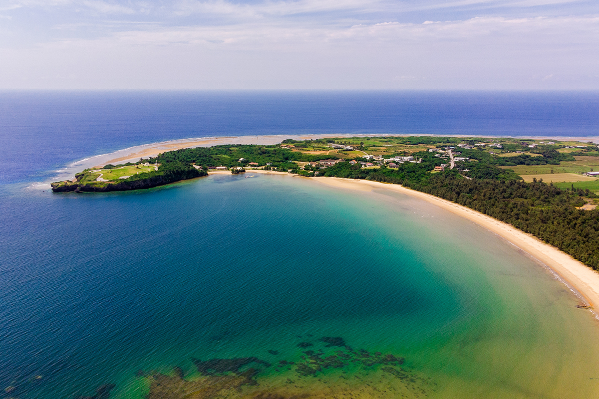
Ириомотэ называют «восточными Галапагосами»: субтропические джунгли занимают здесь больше 90% площади, а реки прорезают горы глубокими долинами. В 2021 году остров вошёл в список всемирного природного наследия ЮНЕСКО, и путешествие сюда похоже на маленькую экспедицию.
Остров
Последний дикий уголок Японии
Ириомотэ лежит в архипелаге Яэяма, на крайнем юго-западе Японии, и административно относится к посёлку Такэтоми. Площадь острова почти 290 квадратных километров, длина береговой линии около 130 километров. Почти весь он покрыт нетронутыми джунглями, и весь остров объявлен квазинациональным парком. Глядя на такие пейзажи, трудно поверить, что это всё ещё Япония.
Кроме небольшого участка на востоке, Ириомотэ состоит из холмов и гор высотой от 300 до 450 метров. Самая высокая точка, гора Коми, поднимается на 469,5 метра. С гор стекает множество рек: на юге течёт Накама, на севере Ураути, самая длинная река Окинавы, и вода веками вырезала в склонах глубокие ущелья.
26 июля 2021 года Ириомотэ вместе с островами Амами-Осима, Токуносима и северной частью острова Окинава внесли в список всемирного природного наследия. Главным доводом стало биоразнообразие: на острове живут редкие растения и животные, которых больше нигде нет, например ириомотская кошка и пальма яэяма.
Вода
Водопады и мангровые леса
На Ириомотэ больше ста водопадов. Пинайсара на севере острова падает с высоты 54 метра, и это самый высокий водопад префектуры. Двухступенчатый Мариюду входит в список ста лучших водопадов Японии, а название водопада Камбирэ означает «место, где сидят боги».
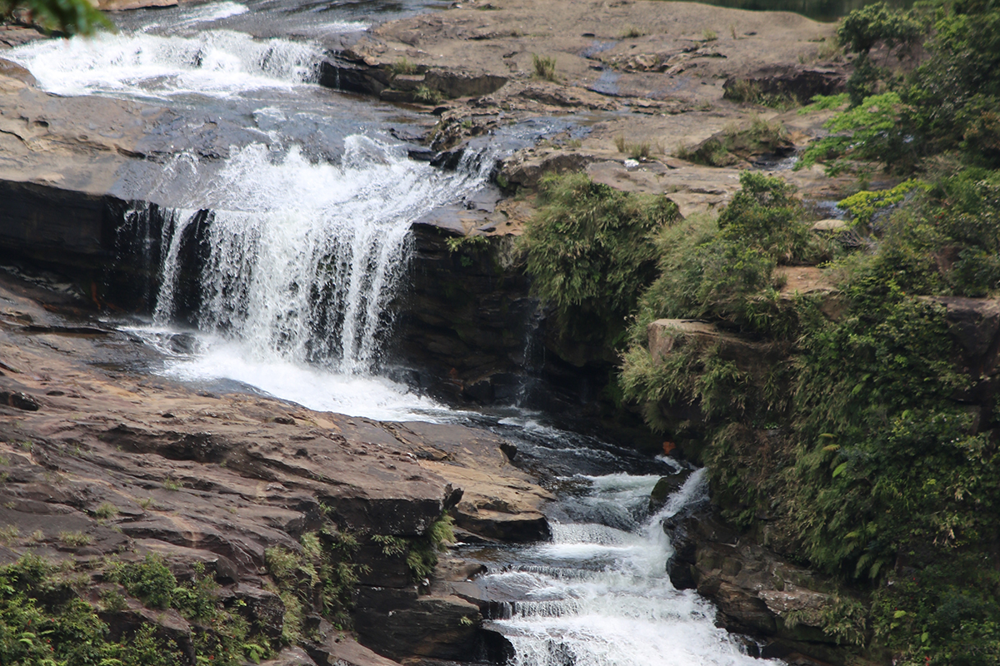
В устьях рек раскинулись крупнейшие в Японии мангровые леса. Здесь растут все семь видов мангровых растений, которые встречаются в стране. На реке Накама мангры занимают 158 гектаров, а рядом стоят рощи сакисима-суоноки, вечнозелёных деревьев с огромными досковидными корнями, похожими на плоские стены.
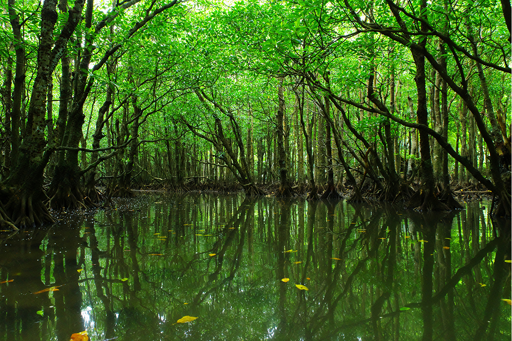
Чем дальше в джунгли, тем необычнее картины, которые создаёт субтропический климат. По рекам и лесу ходят на каяках и каноэ, пешком и на прогулочных катерах.
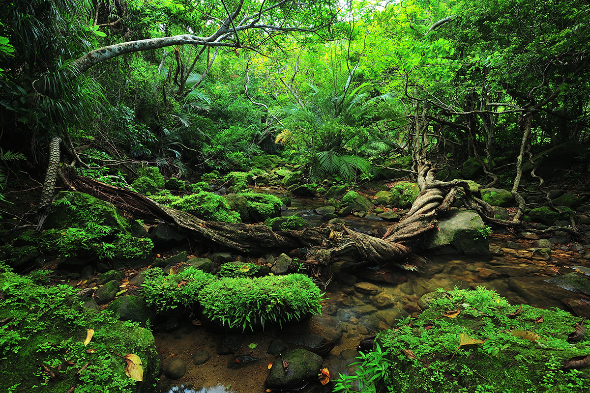
Каноэ до водопада Нара
Один из самых известных маршрутов ведёт по реке Накара. Около двух часов гребёшь на каноэ через мангровый лес, потом примерно полчаса идёшь пешком и выходишь к водопаду Нара. Чаша под ним широкая, в ней можно купаться.
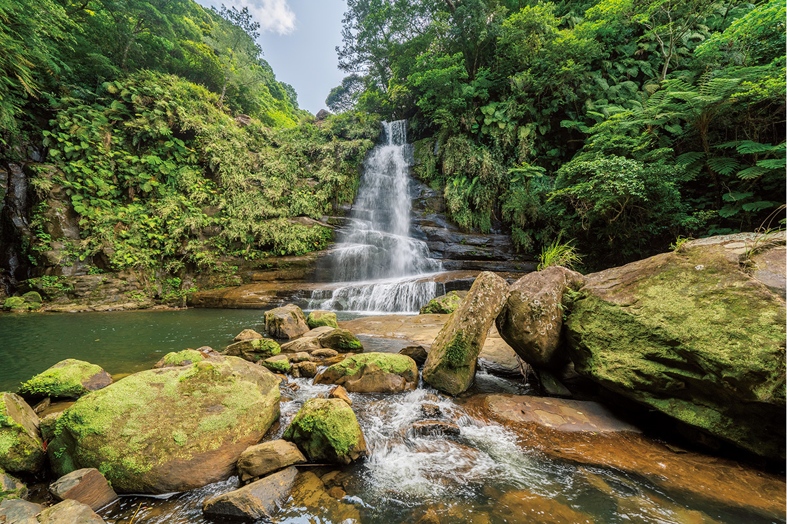
Мангры растут в солоноватой воде, где река встречается с морем, но соль они вовсе не любят. Поэтому интересно наблюдать, как выше по течению, где вода становится преснее, деревья делаются всё крупнее и мощнее. По берегам по пути цветут пандан и баррингтония.
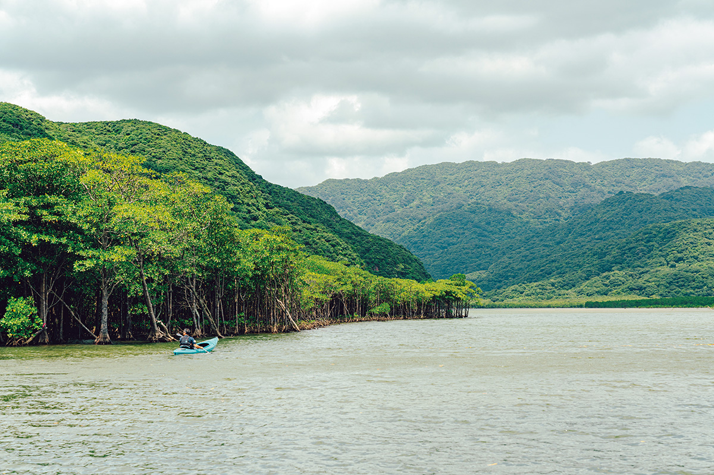
Природа
Кто живёт в джунглях
Около 90% острова занимают леса. Две трети площади приходится на один тип вечнозелёного леса с дубом сии, а вместе с мангровыми зарослями вечнозелёные широколиственные деревья покрывают 70% Ириомотэ. Здесь записаны 59 эндемичных видов растений и 6 видов, которым угрожает исчезновение в мировом масштабе.
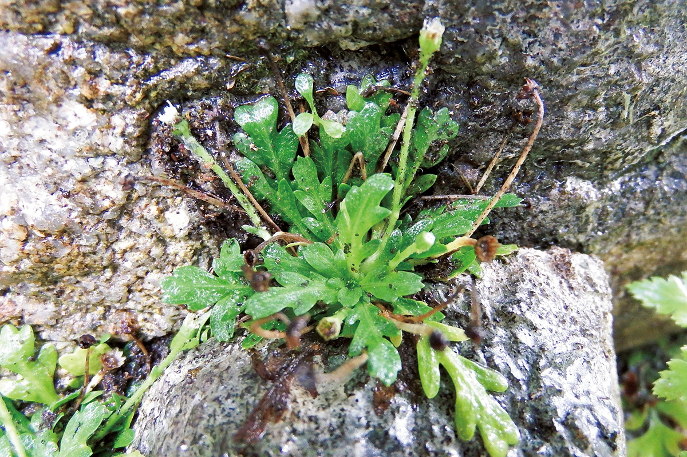
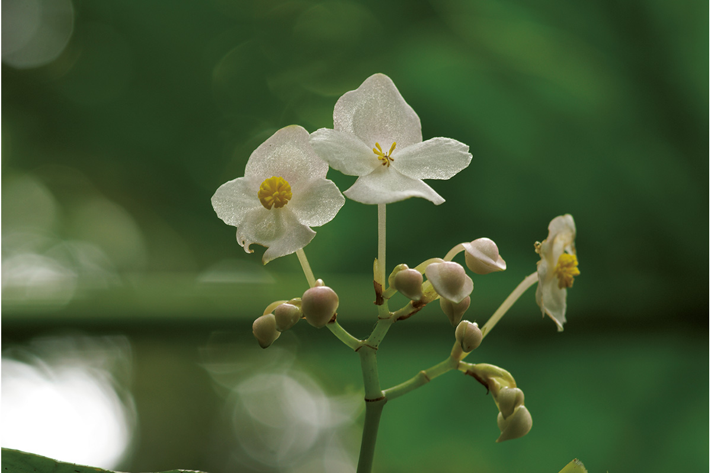
Самое сильное животное острова это ириомотская кошка. Рядом с ней живут яэямские летучие лисицы и рюкюские кабаны, хохлатый змееяд, местные черепахи, ящерицы и сцинки, лягушки, а ещё ёнагуни-сан, самая крупная бабочка Японии. Многие из них эндемики, некоторые находятся под угрозой исчезновения.
Кошка
Ириомотская кошка, живое ископаемое
Ириомотэ это самый маленький остров в мире, где живёт дикая кошка. Ириомотская кошка пришла с материка в те времена, когда остров то соединялся с ним, то снова отделялся. Её кости и зубы очень похожи на кости и зубы вымерших предков рыси, поэтому зоолог, рассказавший нам о ней, называет её живым ископаемым.
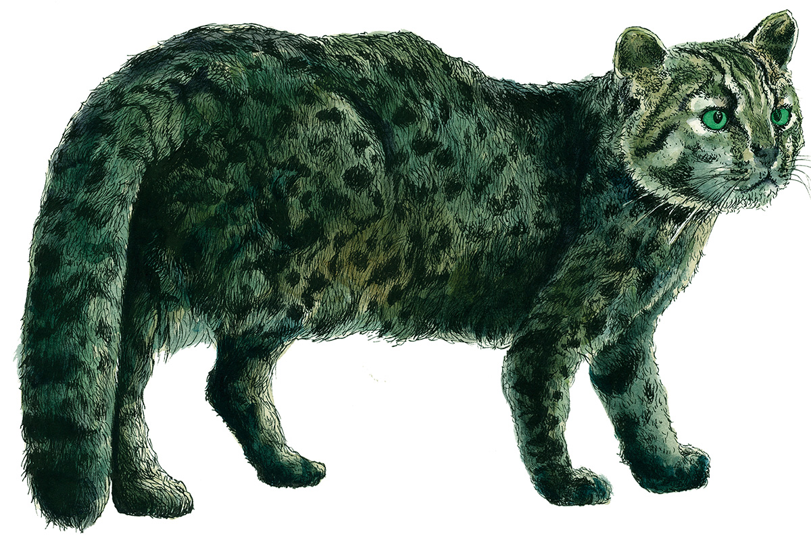
По его словам, она примитивнее даже бенгальской кошки из Юго-Восточной Азии. Более развитые дикие кошки ощипывают птиц крупнее бюльбюля, а ириомотская съедает добычу целиком. Хвост у неё толстый до самого кончика, уши круглые, и на обратной стороне каждого белое пятно. Такие пятна есть у всех диких кошек Юго-Восточной Азии: вероятно, ушами они показывают настроение, а детёныши по этим пятнам ночью идут за матерью по лесу. Ещё одна особенность: кошка выделяет очень сильный запах.
«Если сильно развести, вышли бы, пожалуй, духи. Но запах, скажем так, своеобразный»
зоолог
Ест она крыс, пастушков, мелких птиц, ящериц, змей, крабов, рыбу, летучих мышей и поросят кабана, выбирая то, чего в данный сезон больше. Меню у неё разнообразнее, чем у других диких кошек: так она приспособилась к острову, где любой добычи немного.
«Для исследований мы держали одного самца и одну самку. Самка быстро привыкла к новому месту, а самец, увы, нет»
зоолог
Длина тела кошки 50–60 сантиметров, хвоста 20–25, весит она 3–4 килограмма. На лбу чёрные и белые продольные полосы, вокруг глаз белая обводка, нос крупный, пятна на теле размытые. Живёт она по всему острову: во влажных лесах у ручьёв, в манграх, в низинах от подножий гор до самого берега.
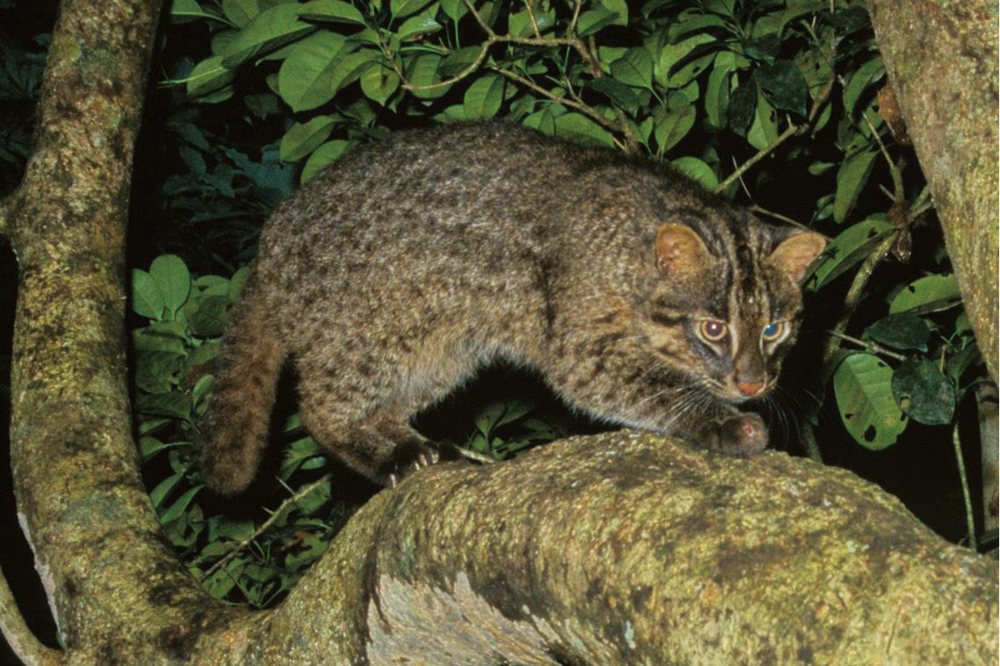
Почему кошка под угрозой
Когда в 1967 году кошку описали как новый вид, их было примерно 50–70. Благодаря охране число выросло до 100–109 особей по данным 2008 года. Главная причина гибели сегодня это машины: дорогу вокруг острова заасфальтировали, и почти каждый год кто-то сбивает кошку ночью на большой скорости. Опасны и болезни, например вирус иммунодефицита кошек, которым можно заразиться от одичавших и плохо содержащихся домашних кошек.
Префектура, министерство окружающей среды и специалисты строят под дорогами туннели для животных, наносят на опасных участках шумовую разметку и ставят знаки. Жителей и туристов просят сообщать, где они видели кошку, и по этим данным переставляют передвижные щиты для водителей. Домашних кошек на острове регистрируют с помощью микрочипов, а всех привезённых животных проверяют на карантине. Кошка может выйти прямо на дорогу, поэтому за рулём на Ириомотэ нужно быть особенно внимательным.
Центр охраны дикой природы
Лучше всего узнать об ириомотской кошке можно в Центре охраны дикой природы Ириомотэ в районе Коми. Это главная база охраны кошки: здесь изучают и защищают исчезающие виды, а чучела и фотографии рассказывают о животных и природе острова. Подробнее всего говорится о самой кошке: как она живёт, как её охраняют, где её недавно видели. Центр устраивает выставки и лекции, а кошек, пострадавших под колёсами, лечит и возвращает в дикую природу.
Центр охраны дикой природы Ириомотэ
- Адрес
- префектура Окинава, уезд Яэяма, посёлок Такэтоми, Коми
- Телефон
- +81 980-85-5581
- Часы работы
- 10:00–16:00
- Выходные
- понедельник (если это праздник, то и вторник), праздничные дни, 23 июня (День памяти погибших)
- Сайт
- iwcc.jp
Туры
Только с гидом
По рекам и джунглям Ириомотэ можно ходить самому, но лучше идти с аттестованным гидом. Это нужно и для того, чтобы беречь природу острова, и ради собственной безопасности в джунглях. У гидов есть лицензия посёлка Такэтоми: чтобы её получить, нужно пройти обучение первой помощи и спасению на воде и выполнить ещё ряд требований. Перед тем как записаться на тур, проверьте на сайте посёлка, есть ли у гида лицензия.
Ириомотэ стал объектом наследия именно потому, что сюда почти не ступала нога человека, и туристы не должны этого изменить. Главное правило здесь экотуризм: приезжать, понимать и беречь.
Море
Пляжи Ириомотэ
Море здесь не уступает джунглям. На западе острова лежит пляж Хосидзуна, «пляж звёздного песка»: песчинки на нём в форме звёздочек. Волны тихие, у больших камней много рыбы, так что здесь хорошо купаться и плавать с маской.
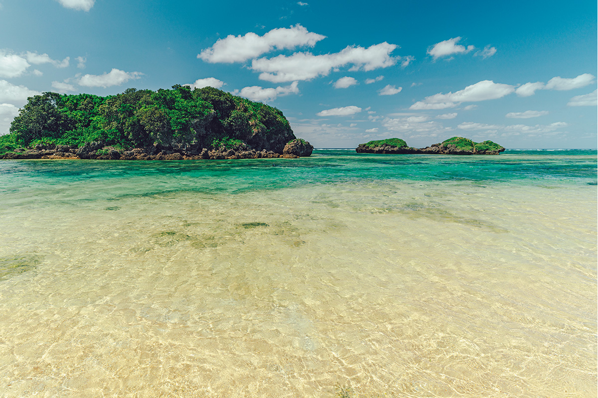
Ещё более уединённое место это деревня Фунауки, куда можно добраться только на лодке. Её пляж Ида с белым песком похож на частный.
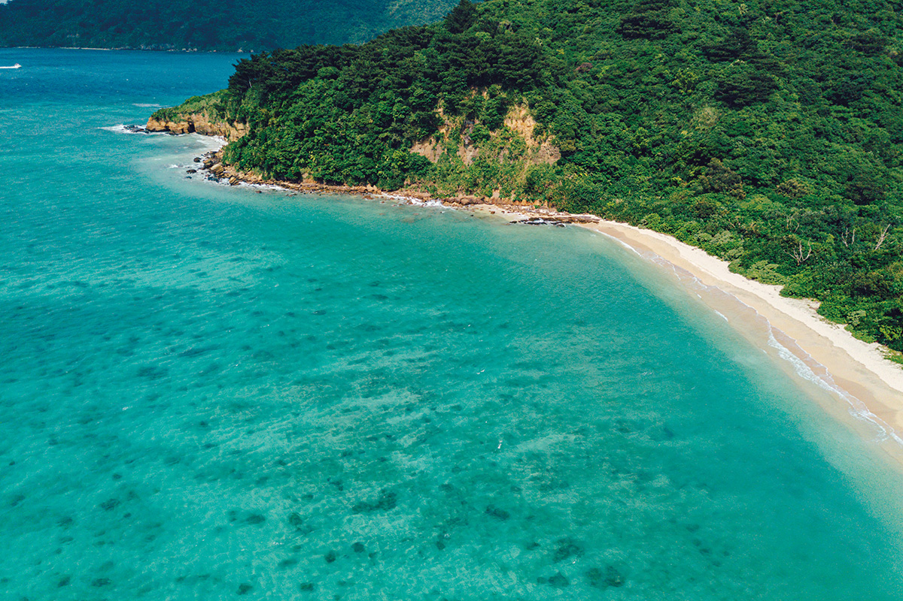
Еда и ночлег
Соба, манго и отель у моря
На острове стоит попробовать местные блюда: каракатицу кубусими, блюда из крабов гадзами, чёрно-фиолетовый рис и чёрный сахар. Главный праздник острова называется Сити.
В посёлке Уэхара есть закусочная «Биби», её держит семья, выращивающая манго. Здесь варят яэямскую собу. Порция с хрящевыми рёбрышками соки, томлёнными до мягкости, очень сытная и стоила 750 иен в 2021 году. После еды берите густой сок из свежего манго (600 иен в 2021 году, только в сезон).
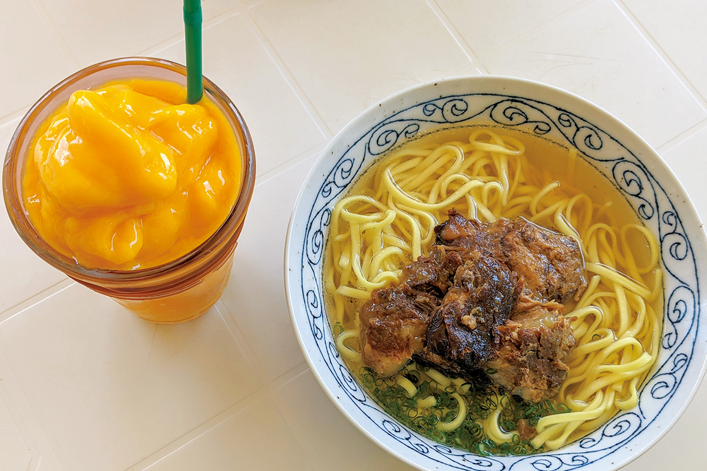
«Биби»
- Адрес
- префектура Окинава, уезд Яэяма, посёлок Такэтоми, Уэхара, 397-57
- Телефон
- +81 980-85-7178
- Часы работы
- 11:00–14:00, 18:00–21:00 (последний заказ 20:00), в пятницу 11:00–14:00
- Выходные
- суббота
Iriomote Hotel by Hoshino Resorts хочет стать отелем экотуризма. Его работа строится на трёх вещах: экологичное устройство самого отеля, природные туры, которые показывают ценность острова, и помощь в охране ириомотской кошки. Ночь с завтраком в 2021 году стоила от 14 000 иен с налогом и сервисным сбором.
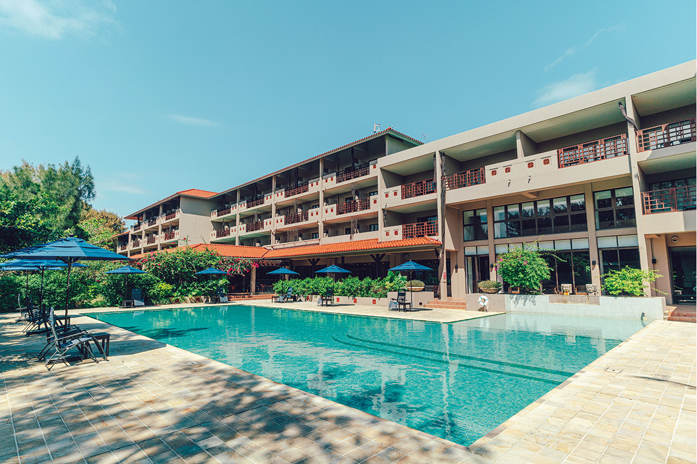
Iriomote Hotel by Hoshino Resorts
- Адрес
- префектура Окинава, уезд Яэяма, посёлок Такэтоми, Уэхара, 2-2
- Телефон
- +81 570-073-022 (10:00–18:00)
- Цены / Вход
- ночь с завтраком от 14 000 иен с налогом и сервисным сбором (2021)
Дорога
Как добраться
Сначала нужно долететь до Исигаки. Из Токио (аэропорты Ханэда и Нарита) рейс длится от 2 часов 50 минут до 3,5 часа, из аэропорта Кансай около 2 часов 25 минут. От морского терминала порта Исигаки скоростное судно идёт до порта Охара примерно 40 минут, до порта Уэхара около 45 минут. По острову ездят на автобусе, такси, арендованной машине или мопеде.
Ириомотэ
- Адрес
- префектура Окинава, уезд Яэяма, посёлок Такэтоми
- Телефон
- +81 980-82-5445 (туристическая ассоциация посёлка Такэтоми)
- Как добраться
- от порта Исигаки скоростным судном около 40 минут до порта Охара или около 45 минут до порта Уэхара
Фото: Юити Ёкота.